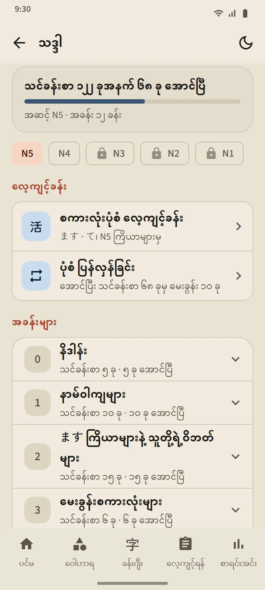
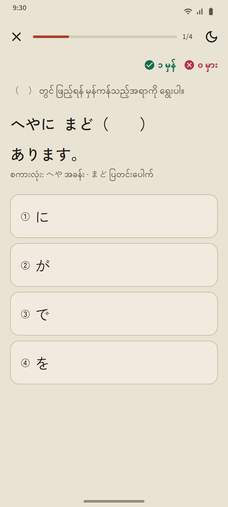
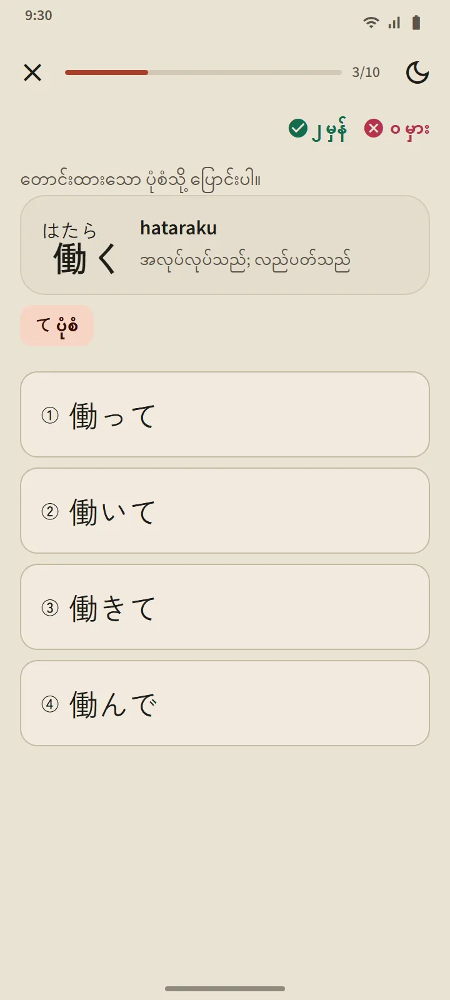
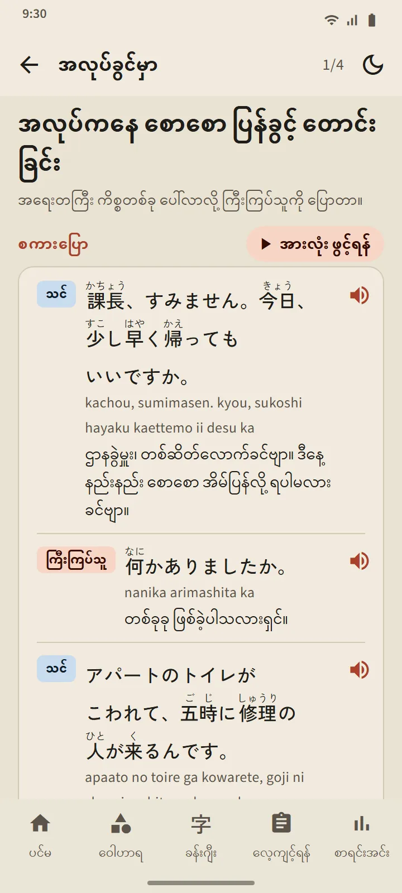

အဆင့် ငါးဆင့်၊ သင်ခန်းစာ 268 ခု
သဒ္ဒါ စာမျက်နှာကို ပင်မ စာမျက်နှာ၏ "ဂျပန်စာ အခြေခံ" အပိုင်းမှ ဖွင့်ပါသည်။ အပေါ်ရှိ ချစ်ပ်များက N5၊ N4၊ N3၊ N2 နှင့် N1 ကြား ပြောင်းပေးပြီး အခန်းများကို နေရာတွင်ပင် ဖွင့်ကာ သင်ခန်းစာတိုင်းကို မဖွင့်ရသေး၊ ဖတ်ပြီး သို့မဟုတ် လေ့ကျင့်ခန်း အောင်ပြီဟု မှတ်ထားပါသည်။ N5 သည် N5 လေ့ကျင့်စာမေးပွဲ၏ ပုံစံအားလုံးကို လွှမ်းခြုံပြီး N3 မှ N1 သည် ထိုအဆင့်များ၏ လေ့ကျင့်စာမေးပွဲတွင် မေးသော ပုံစံများကို လွှမ်းခြုံပါသည်။
| အဆင့် | သင်ခန်းစာ | အသုံးပြုခွင့် |
|---|---|---|
| N5 | ၁၂၂ | အခမဲ့ |
| N4 | ၅၆ | အခမဲ့ |
| N3 | ၂၅ | Premium |
| N2 | ၂၆ | Premium |
| N1 | ၃၉ | Premium |

သင်ခန်းစာတစ်ခု၏ ပုံစံ
သင်ခန်းစာတိုင်းသည် တူညီသော အပြင်အဆင်ကို လိုက်နာသည်- ပုံစံနှင့် ၎င်း၏ အဓိပ္ပာယ်၊ ဖွဲ့စည်းပုံ (ဖော်မြူလာနှင့် ဥပမာ စကားလုံးများ)၊ ရှင်းလင်းချက်၊ နားထောင်နိုင်သော ဖူရိဂနာပါ ဥပမာများ နှင့် ဆင်တူသော ပုံစံများအတွက် မမှားပါစေနှင့်။ ဂျပန်ဝါကျများကို ဖုန်းသေးသေးတွင်လည်း ဖတ်ရလွယ်စေရန် စကားစုများကြားတွင်သာ အတန်းဆင်းစေသည်။
ရှင်းလင်းချက်ပါ လေ့ကျင့်ခန်း
သင်ခန်းစာ၏ အောက်ဆုံးရှိ ခလုတ်က မေးခွန်းသုံးခုမှ ငါးခုပါ လေ့ကျင့်ခန်းကို ဖွင့်သည်။ အဖြေတိုင်းတွင် ရှင်းလင်းချက် ပါသည်။ အမှားတစ်ခုထက်မပိုလျှင် သင်ခန်းစာကို အောင်သည်ဟု ရေတွက်ပြီး မအောင်သည်များကို ထပ်လုပ်နိုင်သည်။ ရလဒ်များကို သဒ္ဒါစာမျက်နှာနှင့် စာရင်းအင်း တက်ဘ်တွင် မှတ်တမ်းတင်သည်။

စကားလုံးပုံစံ လေ့ကျင့်ခန်းနှင့် ပုံစံ ပြန်လှန်ခြင်း
သဒ္ဒါ စာမျက်နှာ၏ လေ့ကျင့်ခန်း အပိုင်းတွင် လေ့ကျင့်ခန်း နှစ်ခု ရှိပါသည်။ စကားလုံးပုံစံ လေ့ကျင့်ခန်း က N5 ကြိယာများကို ます၊ て၊ ない၊ အဘိဓာန်ပုံစံနှင့် た ပုံစံသို့ ပြောင်းစေပြီး ပုံစံတစ်ခုစီသည် ၎င်း၏ သင်ခန်းစာ အောင်ပြီးမှ ပွင့်ကာ အဖြေတိုင်းက စည်းမျဉ်းကို ရှင်းပြပါသည်။ ပုံစံ ပြန်လှန်ခြင်း က အောင်ပြီးသော သင်ခန်းစာများမှ မေးခွန်း အများဆုံး 10 ခု မေးပြီး အကြာဆုံး ပြန်မလှန်ရသေးသည်ကို ဦးစွာ မေးပါသည်။ စာမေးပွဲ လေ့ကျင့်ရာတွင် သဒ္ဒါ မေးခွန်းများသည် "ဤပုံစံကို လေ့လာရန်" ဖြင့် ၎င်းတို့၏ သင်ခန်းစာသို့ ချိတ်ပေးပါသည်။

အသုံးအနှုန်းနှင့် စကားပြော
အခြေအနေ 12 ခုတွင် စကားပြောတို 48 ခု- မိတ်ဆက်ခြင်းနှင့် နှုတ်ဆက်ခြင်း၊ နေ့စဉ် စကားစမြည်၊ အလုပ်နေရာ၊ ဆိုင်၊ စားသောက်ဆိုင်၊ ဘူတာ၊ ဆေးရုံနှင့် ဆေးဆိုင်၊ ဖုန်း၊ အစိုးရရုံး၊ ဘဏ်နှင့် စာတိုက်၊ နေထိုင်ရာနှင့် အိမ်နီးချင်း၊ အရေးပေါ် အခြေအနေ။ တစ်ခုစီတွင် ဖုရိဂနာ၊ ရိုမာဂျီနှင့် အဓိပ္ပာယ်ပါသော စာကြောင်းများ၊ ပြောသူတစ်ဦးစီအတွက် အသံကွဲပြားစွာ ဖတ်ပေးသော "အားလုံး ဖွင့်ရန်" ခလုတ်၊ အရေးကြီးသော အသုံးအနှုန်းများနှင့် လေ့ကျင့်ခန်းတို ပါဝင်ပါသည်။ ပထမ အခြေအနေ 3 ခုသည် အခမဲ့ ဖြစ်ပါသည်။

သင့်ဘာသာစကားဖြင့်
ရှင်းလင်းချက်၊ ဥပမာ အဓိပ္ပာယ်၊ အဖြေ ရွေးချယ်စရာနှင့် ဖြေရှင်းချက်များကို ဘာသာစကား 14 မျိုးဖြင့် ရနိုင်ပါသည်- အင်္ဂလိပ်၊ အင်ဒိုနီးရှား၊ ဗီယက်နမ်၊ မြန်မာ၊ နီပေါ၊ ထိုင်း၊ ဆင်ဟာလ၊ ဖိလစ်ပိုင်၊ ဟိန္ဒီ၊ ဘင်္ဂါလီ၊ မွန်ဂို၊ ခမာ၊ ကိုရီးယားနှင့် ရိုးရာ တရုတ်။ ဂျပန် ဝါကျ၊ ပုံသေနည်းနှင့် အဖြေမှန်များသည် ဘာသာစကားတိုင်းတွင် တူညီပါသည်။ သင်ခန်းစာများကို TokuGo အတွက် ရေးသားပြီးနောက် စစ်ဆေးထားပြီး ပွင့်လင်းသော ရင်းမြစ်များကို တိုက်ဆိုင်စစ်ဆေးရန်သာ အသုံးပြုပါသည်။